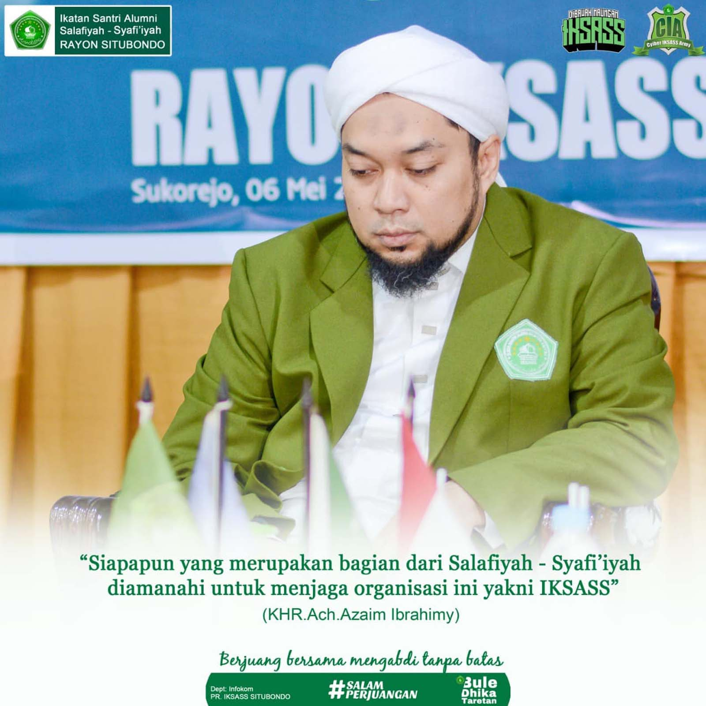
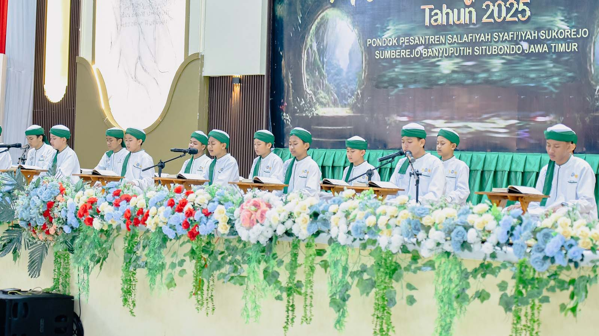
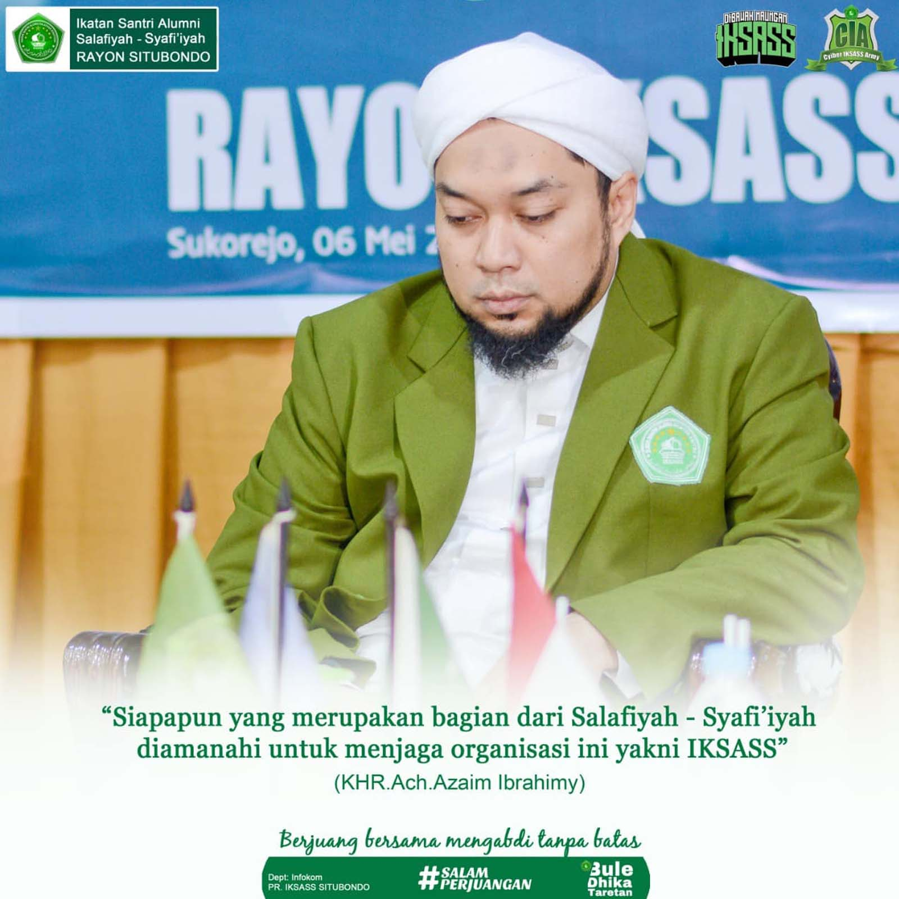
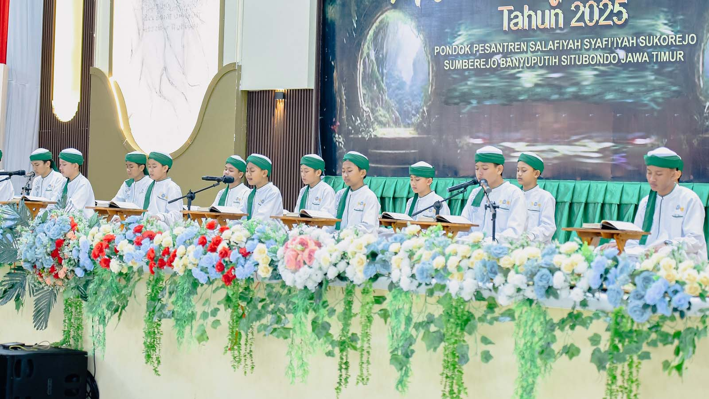

Pendidikan & Ke-NU-an — Merawat Ilmu, Menjaga Tradisi
Pendidikan dan nilai-nilai Ke-NU-an menjadi fondasi utama gerak IKSASS dalam membentuk insan yang berilmu, berakhlak, dan berkeadaban. Melalui pengajian, forum keilmuan, serta penguatan tradisi Ahlussunnah wal Jama’ah, IKSASS terus merawat warisan pesantren agar tetap hidup, relevan, dan membumi di tengah perubahan zaman.
IKSASS
Dokumentasi
 


